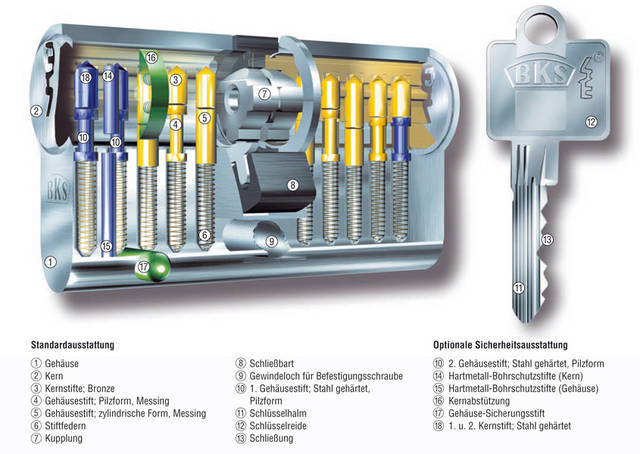
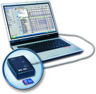
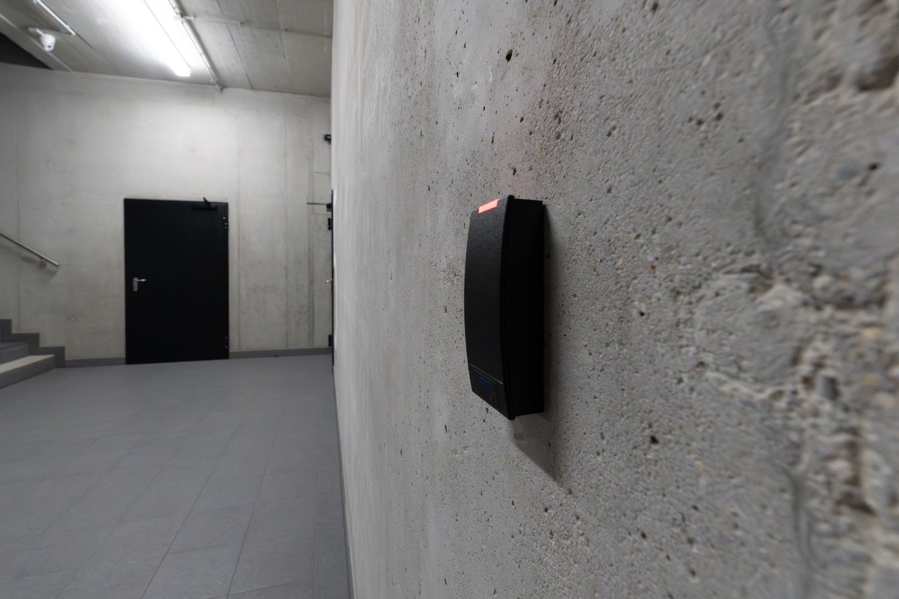
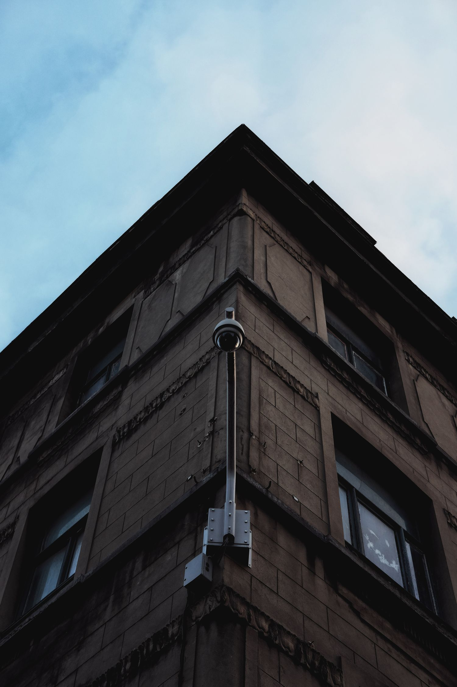
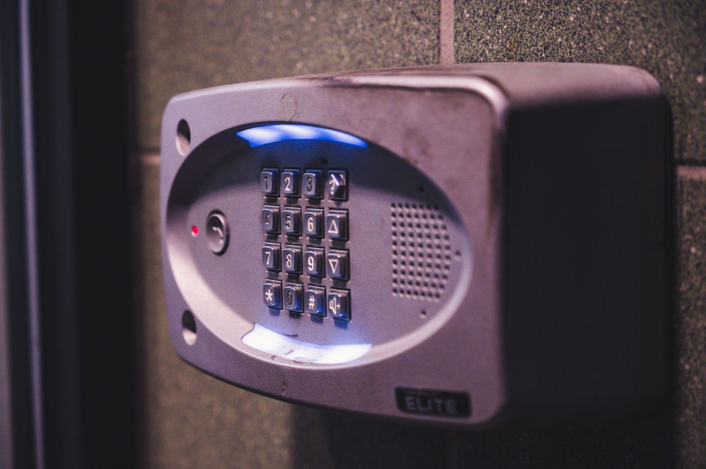
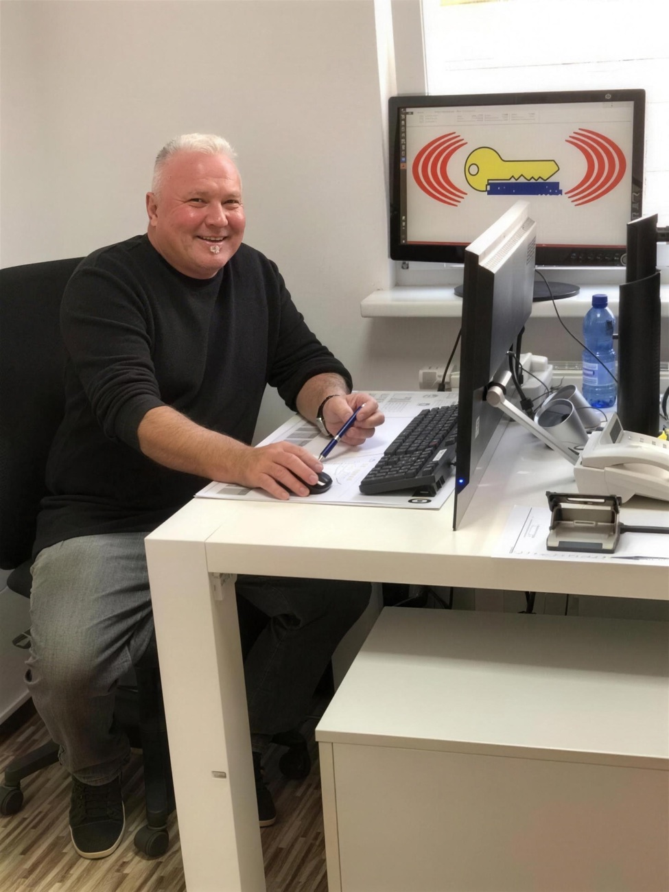

Mechanische Schließanlagen
Maßgeschneiderte Schließsysteme mit zentralem Generalschlüssel — vom Einfamilienhaus bis zum Industriekomplex. Erweiterbar, nachschließbar, sicherungsschein-geschützt.
Seit 1978 schützen wir Unternehmen, Behörden und Privathaushalte — von der mechanischen Schließanlage bis zur elektronischen Zutrittskontrolle. Mit dem Vertrauen von Siemens, den Riem Arcaden und der US Army.
Mechanisch, elektronisch oder beides — wir planen, installieren und warten. Aus einer Hand, vom Meisterbetrieb.

Maßgeschneiderte Schließsysteme mit zentralem Generalschlüssel — vom Einfamilienhaus bis zum Industriekomplex. Erweiterbar, nachschließbar, sicherungsschein-geschützt.

Transponder, PIN, Fingerprint — wer darf wann wohin? Voll protokolliert.

Selbstverriegelnde Schlösser, Türschließer, Fluchttüren — komfortabel und normgerecht.

Pilzkopfverriegelung, Bandseitensicherung, Querriegelschlösser, Alarm — wir härten Türen und Fenster nach den aktuellen Widerstandsklassen. Auf Wunsch mit polizeilicher Beratung und KfW-fähiger Dokumentation.

Ausgesperrt, Einbruchschaden oder Türstörung? Unser Bereitschaftsteam ist rund um die Uhr erreichbar und in der Regel in unter 60 Minuten vor Ort.

Was 1978 als Schlüsseldienst begann, ist heute ein Meisterbetrieb für ganzheitliche Sicherheitstechnik — inhabergeführt von Ludwig Zeberl, mit Tanja Haubner in der Geschäftsführung. Wir beraten ehrlich, planen sauber und stehen auch nach der Montage parat. Genau deshalb vertrauen uns Konzerne wie Siemens ebenso wie die Familie von nebenan.
„Schließanlage für 38 Wohneinheiten komplett erneuert — sauber geplant, termingerecht montiert, alles dokumentiert. Endlich ein Betrieb, der mitdenkt."
„Nachts ausgesperrt, in 40 Minuten war der Notdienst da — ohne die Tür zu zerstören. Fairer Festpreis. Absolut empfehlenswert."
„Zutrittskontrolle für unsere Produktion inkl. Protokollierung. Kompetente Beratung, zuverlässiger Service über Jahre."
Unser Bereitschaftsteam ist 24/7 erreichbar und in Neumarkt und Umgebung in der Regel in unter 60 Minuten vor Ort. Bei Aussperrungen öffnen wir Türen in den allermeisten Fällen zerstörungsfrei.
Ja. Wir prüfen Ihr vorhandenes System und erweitern es nachschließbar — neue Zylinder, zusätzliche Schlüssel oder Umstellung auf einen Generalschlüssel. Sicherungskarte vorausgesetzt, fertigen wir Nachschlüssel berechtigungsgeschützt.
Oft ja: Schon ab wenigen Türen sparen Sie das Austauschen von Zylindern bei verlorenen Schlüsseln — eine Berechtigung wird einfach digital gesperrt. Wir beraten, ob mechanisch, elektronisch oder eine Kombination für Sie am wirtschaftlichsten ist.
Ja. Wir rüsten Türen und Fenster nach Widerstandsklassen (RC2/RC3) nach und stellen die für KfW-Zuschüsse nötige Fachunternehmer-Dokumentation aus. Auf Wunsch mit polizeilicher Beratung.
Schwerpunkt ist Neumarkt in der Oberpfalz und der Landkreis. Für Projekte (Schließanlagen, Zutrittssysteme) sind wir auch überregional im Einsatz — Referenzen reichen bis München (Riem Arcaden) und zu internationalen Auftraggebern.
Beratung, Angebot oder akuter Notfall — wir sind für Sie da.
Ausgesperrt, Einbruchschaden oder defektes Schloss? Rufen Sie an — wir kommen.
Wir melden uns innerhalb eines Werktages.